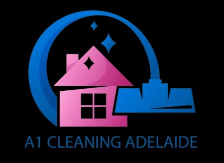

✓
Cleanliness
Deep cleaning, sanitising, hygiene, and room-readiness standards.
✦ Oval Hotel Housekeeping Candidate
I am Jonas Ryan Charles, an adaptable hospitality and cleaning professional based in Adelaide. My background covers resort operations, front office support, night audit, retail cleaning, event hospitality, stock handling, and customer service. For Oval Hotel housekeeping, I bring attention to detail, reliability, physical stamina, guest awareness, and the discipline to keep rooms and service areas inspection-ready.
Replace with profile.jpg
Deep cleaning, sanitising, hygiene, and room-readiness standards.
Resort, front office, night audit, event service, and customer-facing work.
Available all days including night shifts, with experience in late operational work.
Experience
Resort Operations
Apr 2024 – Jun 2024
Event Hospitality
Nov 2025 – Mar 2026
Retail Cleaning
Nov 2025 – Mar 2026

Professional Cleaning
Aug 2025 – Nov 2025
Food Production
Oct 2025 – Dec 2025
Store Operations
Aug 2025 – Oct 2025
Skills
Available all days including night shifts. Based in Adelaide, SA.
Testimonials
Recognised for: Deliver for our Customers
Great work for the great standards and attention to detail you have brought to the Marion prep areas this last week. I had some outstanding feedback from the store team and just want to say thank you. Keep up the awesome work.
Resort work experience reference
Demonstrated professionalism and a strong work ethic. Efficiently handled responsibilities across multiple departments and consistently maintained a positive attitude.
Ready for interview